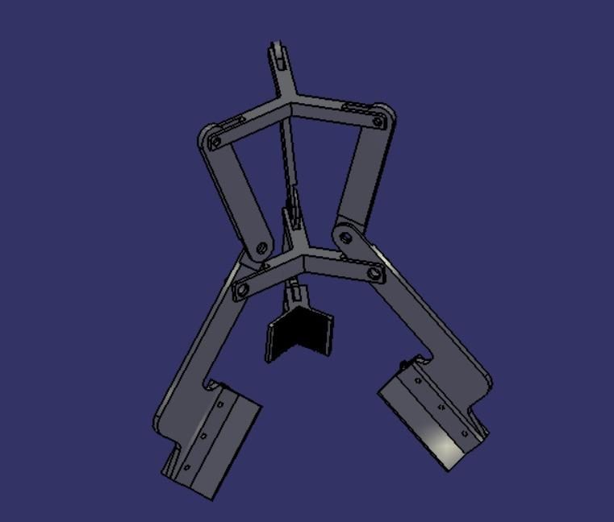
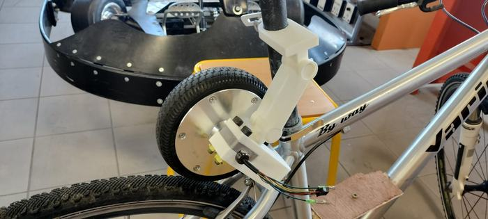
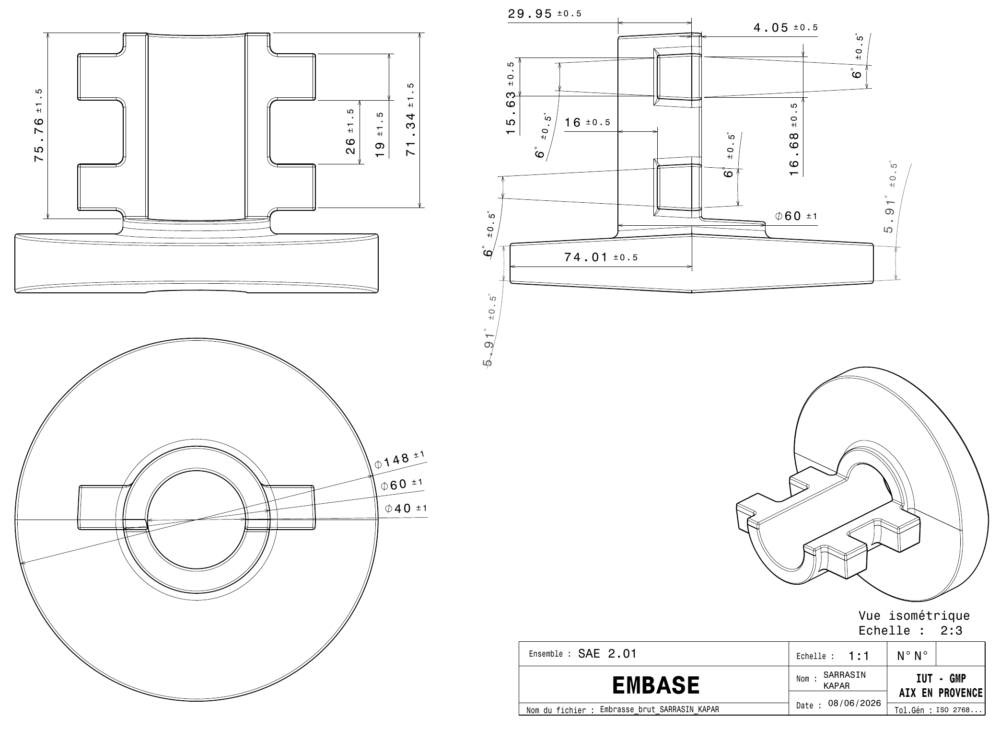

Mes projets
Trois projets, du lycée à l'IUT.

En cours, jusqu'en mars
Pince à canette
Une pince qui saisit une canette sans la marquer, pour une fraiseuse 5 axes.
- Contexte
- Conception mécanique, équipe de 4
- Outils
- CATIA V5, veille, étude mécanique

Projet de terminale STI2D
Un VTT converti en Solex
Une roue d'hoverboard sur un VTT, limitée à 25 km/h. Le moteur se désolidarise : le vélo redevient un vélo.
- Contexte
- Projet de terminale, j'en étais le chef de projet
- Outils
- SolidWorks, Arduino, chaîne mécanique

SAÉ 2.01, avec Ahmet Kapar
Une embase en fonte
Dessiner la pièce brute d'une embase pour la mouler : plan de joint, noyau, rayons, gamme de moulage.
- Contexte
- SAÉ 2.01 à l'IUT, en binôme
- Outils
- CATIA V5, procédés de fonderie